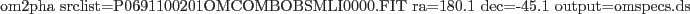

om2pha works from an input XMM-Newton OM source list and an input celestial position. It finds the source list entry corresponding to the input position, within a certain tolerance, and extracts the filter count rates and errors into a single spectral file. This file may then be used in a spectral fitting program, such as XSPEC, possibly in conjunction with spectra from X-ray instruments to perform spectral fitting over the optical, UV and possibly X-ray bands.
The output is a single spectral file, known as an "OGIP TYPE:II" file that contains the spectrum for each filter on a separate row. Each row refers to the response matrix which should be used for this filter within the fitting program. The most recent response matrices, available from the XMM-Newton web site, should be copied into the current directory before starting the fitting process.
Each row of the multiple spectral file contains the columns: SPEC_NUM (scalar giving the reference number of the spectrum in the particular row), CHANNEL (specifying that we use channel 1), RATE (the count rate for this filter in counts/s), STAT_ERR (the statistical error on the count rate),RESPFILE (the response file to be used when interpreting the count rate in this filter), ROWID (the filter name).
The resulting multiple spectrum file can be read into XspecV.10 and higher, for example.
Example: to produce a multiple spectral file from the position RA=180.1 degrees, DEC=-45.1 degrees from the source list P0691100201OMCOMBOBSMLI0000.FIT and write the result into a file called omspecs.ds, use:
